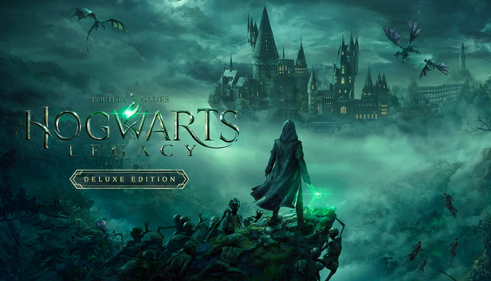

Cyberpunk 2077
Cyberpunk 2077 es un RPG de aventura y acción de mundo abierto ambientado en la megalópolis de Night City, donde te pondrás en la piel de un mercenario o una mercenaria ciberpunk y vivirás su lucha a vida o muerte por la supervivencia. Mejorado y con contenido nuevo adicional gratuito. Personaliza tu personaje y tu estilo de juego a medida que aceptas trabajos, te labras una reputación y desbloqueas mejoras. Las relaciones que forjes y las decisiones que tomes darán forma al mundo que te rodea. Aquí nacen las leyendas. ¿Cuál será la tuya?
leer más
Horizon Zero Dawn
En una época en la que las máquinas caminan a su antojo por el mundo y la humanidad ya no es la especie dominante, una joven cazadora llamada Aloy se embarca en un viaje para descubrir qué le depara el destino.
En un mundo exuberante y postapocalíptico en el que la naturaleza se ha adueñado de las ruinas de una civilización olvidada, los restos de la humanidad viven en tribus de cazadores recolectores. Las máquinas, criaturas mecánicas de origen desconocido, les han arrebatado el dominio de las tierras salvajes.
leer más
Howarts Legacy
Hogwarts Legacy es un RPG de acción en un mundo abierto ambientado en el universo de los libros de Harry Potter. Embárcate en un viaje que te llevará a lugares nuevos y ya conocidos, y en el que podrás descubrir animales fantásticos, personalizar a tu personaje, elaborar pociones, dominar hechizos, mejorar tus habilidades y convertirte en la bruja o el mago que quieras ser.

leer más